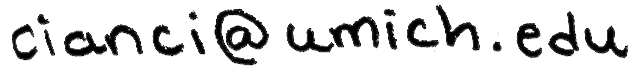

I am a Post-Doctoral Assistant Professor in the Department of Mathematics at University of Michigan. My mentor is Alejandro Uribe. Before coming to Michigan, I was a graduate student in the Mathematics Department at Dartmouth College, where I earned my PhD in 2016 under the direction of Craig Sutton.
My research interests are in Riemannian geometry and mathematical physics.
Contact details
| Address: | Department of Mathematics |
| University of Michigan | |
| 530 Church Street | |
| Ann Arbor, MI 48109 | |
| Office: | 3079 East Hall |
| Email: |  |